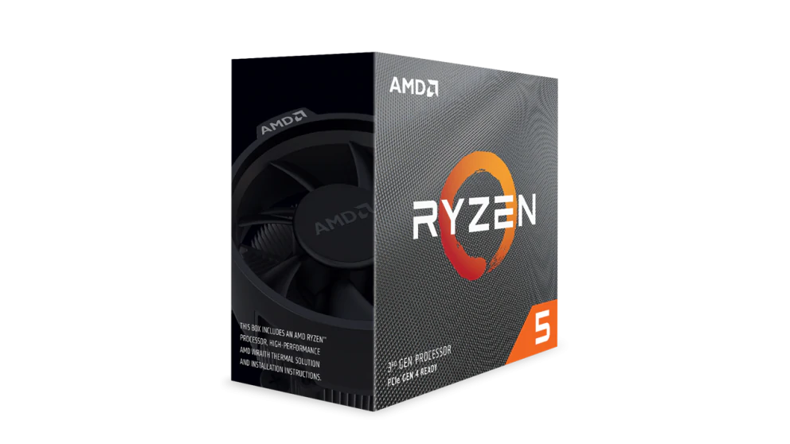

| AMD | Intel | |||
|---|---|---|---|---|
| AMD RyzenTM 5 2600 | AMD Ryzen TM5 3600 | Intel® CoreTM i5-8400 | Intel® CoreTM i5-9400 | |
| Magok száma | 6 mag | |||
| Szálak száma | 12 szál | 6 szál | ||
| Órajel frekvencia | 3.40 GHz | 3.60 GHz | 2.80 GHz | 2.90 GHz |
| Gyártási technológia | 12nm | 7nm | 14nm | |
| TDP | 65 W | |||
|
 | |
||
| Ár | 47.320Ft - 55.390Ft | 79.990Ft - 87.782Ft | 58.970Ft - 60.140Ft | 58.090Ft - 61.490Ft |